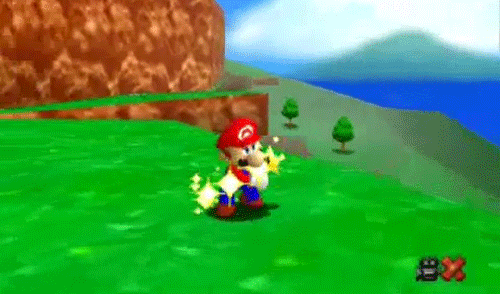

Creació d'un Videojoc
Artista de l'Entorn
L'artista de l'entorn és responsable de crear els entorns i els escenaris del videojoc. Treballa estretament amb altres membres de l'equip per assegurar-se que els entorns siguin visualsment atractius i funcionals.
Animador
L'animador és responsable de crear les animacions dels personatges i els objectes del videojoc. Treballa estretament amb altres membres de l'equip per assegurar-se que les animacions siguin suaus i realistes.
Dissenyador de So
El dissenyador de so és responsable de crear els efectes de so i la música del videojoc. Treballa estretament amb altres membres de l'equip per assegurar-se que el so sigui immersiu i emocionant.
Enginyer d'Àudio
L'enginyer d'àudio és responsable de programar i implementar els efectes de so i la música del videojoc. Treballa estretament amb altres membres de l'equip per assegurar-se que el so sigui de alta qualitat i funcional.
Compositor
El compositor és responsable de crear la música original del videojoc. Treballa estretament amb altres membres de l'equip per assegurar-se que la música sigui emotiva i s'ajusti al joc.
Artista FX
L'artista FX és responsable de crear els efectes visuals especials del videojoc. Treballa estretament amb altres membres de l'equip per assegurar-se que els efectes visuals siguin impressionants i funcionals.
Escriptor
L'escriptor és responsable de crear la història i el diàleg del videojoc. Treballa estretament amb altres membres de l'equip per assegurar-se que la història sigui interessant i coherent.

Legal
El departament legal és responsable de gestionar els aspectes legals del desenvolupament del videojoc. Treballa estretament amb altres membres de l'equip per assegurar-se que el joc compleixi amb les lleis i regulacions aplicables.
Artista del Personatge
L'artista del personatge és responsable de crear els personatges del videojoc. Treballa estretament amb altres membres de l'equip per assegurar-se que els personatges siguin visualsment atractius i funcionals.

Programador de Jugabilitat
El programador de jugabilitat és responsable de programar la jugabilitat i la mecànica del videojoc. Treballa estretament amb altres membres de l'equip per assegurar-se que el joc sigui divertit i engrescador.
Programador d'IA
El programador d'IA és responsable de programar la intel·ligència artificial dels personatges del videojoc. Treballa estretament amb altres membres de l'equip per assegurar-se que els personatges siguin intel·ligents i reaccionin de manera realista.
Programador de Xarxa
El programador de xarxa és responsable de programar la funcionalitat multijugador del videojoc. Treballa estretament amb altres membres de l'equip per assegurar-se que el joc tingui una connexió estable i segura.
Enginyer de Llançament
L'enginyer de llançament és responsable de programar i implementar el llançament del videojoc. Treballa estretament amb altres membres de l'equip per assegurar-se que el llançament sigui exitós i sense problemes.
Programador del Motor Principal
El programador del motor principal és responsable de programar i implementar el motor principal del videojoc. Treballa estretament amb altres membres de l'equip per assegurar-se que el motor sigui estable i eficient.
Programador d'Eines
El programador d'eines és responsable de programar i implementar les eines de desenvolupament del videojoc. Treballa estretament amb altres membres de l'equip per assegurar-se que les eines siguin fàcils d'utilitzar i eficients.
Dissenyador de Nivell
El dissenyador de nivell és responsable de crear els nivells i les missions del videojoc. Treballa estretament amb altres membres de l'equip per assegurar-se que els nivells siguin desafiant i divertits.
Dissenyador d'IU
El dissenyador d'IU és responsable de crear la interfície d'usuari del videojoc. Treballa estretament amb altres membres de l'equip per assegurar-se que la interfície sigui intuïtiva i fàcil d'utilitzar.

Dissenyador de Combat
El dissenyador de combat és responsable de crear el sistema de combat del videojoc. Treballa estretament amb altres membres de l'equip per assegurar-se que el combat sigui emocionant i equilibrat.
Dissenyador de Sistemes
El dissenyador de sistemes és responsable de crear els sistemes de joc del videojoc. Treballa estretament amb altres membres de l'equip per assegurar-se que els sistemes siguin interessants i variats.
Dissenyador de Monetització
El dissenyador de monetització és responsable de crear el sistema de monetització del videojoc. Treballa estretament amb altres membres de l'equip per assegurar-se que el joc sigui rendible i ètic.
QA Tester
El QA tester és responsable de provar i debugar el videojoc. Treballa estretament amb altres membres de l'equip per assegurar-se que el joc sigui lliure d'errors i funcioni correctament.
UX / Investigador d'Usabilitat
L'UX / investigador d'usabilitat és responsable de garantir que el videojoc sigui fàcil d'utilitzar i que proporcioni una bona experiència a l'usuari. Treballa estretament amb altres membres de l'equip per assegurar-se que el joc sigui intuïtiu i satisfactori.
Localització
El departament de localització és responsable de traduir el videojoc a altres idiomes i adaptar-lo a altres cultures. Treballa estretament amb altres membres de l'equip per assegurar-se que el joc sigui accessible i comprensible per a una àmplia audiència.

Productor
El productor és responsable de supervisar i dirigir el procés de desenvolupament del videojoc. Coordina l'equip i s'assegura que el joc es compleixi en el termini i dins del pressupost establerts.
Editor
L'editor és responsable de revisar i millorar el contingut del videojoc. Treballa estretament amb altres membres de l'equip per assegurar-se que el joc tingui una història interessant i coherent.

CEO
El CEO és el cap de l'empresa de videojocs. És responsable de prendre decisions estratègiques i assegurar-se que l'empresa sigui rendible i competitiva.
Relacions Publiques
El departament de relacions públiques és responsable de gestionar la imatge i la reputació de l'empresa de videojocs. Treballa estretament amb altres membres de l'equip per assegurar-se que l'empresa tingui una bona relació amb els mitjans i el públic.
Community Manager
El community manager és responsable de gestionar la comunitat de jugadors de l'empresa de videojocs. Treballa estretament amb altres membres de l'equip per assegurar-se que la comunitat sigui activa i compromesa.
Atenció al Client
El departament d'atenció al client és responsable de gestionar les consultes i les queixes dels jugadors. Treballa estretament amb altres membres de l'equip per assegurar-se que els jugadors estiguin satisfets i ben atesos.
Jugador
El jugador és la raó de ser de tota l'indústria dels videojocs. Sense jugadors, no hi hauria videojocs. Els jugadors són la raó per la qual tots aquests professionals treballen tan durament per crear grans experiències de joc.